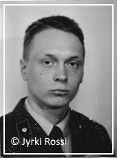

PSYKOLOGIAOPPIMATERIAALIA NETISSÄ VUODESTA 1999 LÄHTIENPSYKOLOGIAN PIKALINKIT PSYKAN VIDEOABIKURSSI: PS7 ABI KERTAUSKURSSI (OPS 2016-): PS1 Psyykkinen toiminta ja oppiminen PS2 Kehittyvä ihminen PS3 Tietoa käsittelevä ihminen PS4 Tunteet, psyykkinen hyvinvointi ja mielenterveys PS5 Yksilöllinen ja yhteisöllinen ihminen
PS2 valtakunnallinen OPS |
PS2 Kehittyvä ihminen
Miten käytät näitä muistiinpanoja tehokkaasti? 1. KEHITYKSEN TUTKIMINEN JA YKSILÖN KEHITYKSEN PÄÄLINJOJA 1.1 Yksilön kehityksen tutkiminen - Ihminen kehittyy niin biologisesta (fyysis-motorinen), psyykkisestä kuin sosiaalisesta näkökulmasta - Pitkittäis- ja poikittaistutkimus - Kaksos- ja adoptiotutkimukset - Lea Pulkkisen tutkimukset 1.2 Perimä vai ympäristö - Ihminen on perimän ja ympäristön tuote (nature - nurture) - Kehitys on yksilöllistä, mutta sidoksissa kulttuuriin - Herkkyyskaudet ja kriittiset kaudet 1.3 Hermoston kypsyminen ja muovautuminen eli plastisiteetti - Hermoston muotoutuminen kehityksen taustalla - Hermosolun ja synapsin toiminta 2. PERUSTA LUODAAN VARHAISLAPSUUDESSA 2.1 Syntymää edeltävä kehitys - Hedelmöityneestä munasolusta synnytykseen - Syntymää edeltävät eli prenataaliset häiriöt 2.2 Vastasyntyneen valmiudet - Vastasyntyneen aistitoiminnot - Refleksit - Kehityksen ja kasvun edellytyksiä - Harry HARLOWin emodeprivaatiokokeet 2.3 Fyysinen ja motorinen kehitys - Kefalokaudaalinen kehitys - Proksimodistaalinen kehitys - VAUVA- JA TAAPEROIÄN KEHITYKSEN KOONTA 2.4 TEORIA: Minän synty (Daniel STERNin mukaan) - 1) Kokeva minä - 2) Ydinminä - 3) Vuorovaikutuksellinen minä - 4) Subjektiivinen minä - 5) Kielellinen minä - 6) Kertova minä 2.5 TEORIA: Kiintymyssuhdemallit (John BOWLBYn mukaan) - Turvallisesti kiintyneet - Välttelevästi kiintyneet - Ristiriitaisesti kiintyneet 2.6 TEORIA: Psykososiaalinen kehitys (ERIK H. ERIKSONin mukaan) - 1) Perusluottamus vs. epäluottamus - 2) Itsenäisyys vs. häpeily - 3) Aloitteellisuus vs. syyllisyys - 4) Ahkeruus vs. alemmuus - 5) Identiteetti vs. roolien hajaannus - 6) Läheisyys vs. eristäytyminen - 7) Luovuus vs. lamaantuminen - 8) Minän eheys vs. epätoivo 3. LEIKKI-IKÄINEN OPPII NIIN TIETOJA, TAITOJA KUIN TUNTEITA 3.1 Leikki on lapsen työtä - Leikki muokkaa mielikuvitusta - Leikin kautta sosiaaliset taidot ja roolit kehittyvät - Leikin avulla harjaantuvat monet taidot - LEIKKI-IKÄISEN KEHITYKSEN KOONTA 3.2 Puheen ja kielen kehittyminen - VYGOTSKY vastaan PIAGET - Kieli ja ajattelu kehittyvät sosiaalisessa vuorovaikutuksessa 3.3 TEORIA: Kognitiivinen kehitys (JEAN PIAGET'n mukaan) - 1) Senso-motorinen vaihe - 2) Esioperationaalinen vaihe - 3) Konkreettisten operaatioiden vaihe - 4) Formaalisten operaatioiden vaihe - 5) Postformaalinen vaihe (PIAGET'n jälkeen lisätty) 4. KOULUIKÄ - ITSENÄISTYMISEN ENSIASKELEITA 4.1 Koululaisen valmiudet - Fyysiset ja motoriset valmiudet - Psyykkiset ja sosiaaliset valmiudet - Erityistä tukea tarvitsevat lapset 4.2 Kaverien merkitys sosiaalistumiselle - Koulu, toinen koti - Irrottautuminen vanhemmista alkaa - Leikistä harrastuksiin 4.3 Koulukiusaaminen - KOULUIKÄISEN KEHITYKSEN KOONTA 5. NUORUUS JA MINÄKÄSITYS 5.1 Murrosikä - Harppaus fyysisessä kehityksessä - Hermoston kehitys (otsalohko lennonjohtotornina) - Tunne-elämän sekavuus (murros synapsikadon vaikutusta) - Mielihyvän tavoittelu 5.2 Identiteetin etsimisen aika - Minäidentiteetti - Sukupuoli-identiteetti - Sosiaalinen ja ammatti-identiteetti - Katsomuksellinen ja kulttuuri-identiteetti 5.3 Riippuvuudet - Mielihyvätumake - Päihderiippuvuus - Kännykkä ja nettiriippuvuus - Peliriippuvuus 5.4 TEORIA: Psykoseksuaalisuuden kehitys (FREUDin mukaan) - 1) Oraalinen vaihe - 2) Anaalinen vaihe - 3) Fallinen vaihe - 4) Latenssivaihe - 5) Genitaalivaihe - NUORUUSIÄN KEHITYKSEN KOONTA 6. AIKUISUUDESTA VANHUUTEEN 6.1 Nuori aikuinen ja oman elämän tien löytyminen - Terveys ja hedelmällisyys huipussaan - Seurustelun vakiintuminen parisuhteeksi - Postformaalinen ajattelu - Aikuisen kiintymystyylit 6.2 Aikuisuus on perheen ja työelämän aikaa - Työ antaa merkitystä elämälle - Perhe, lapset, koti ja harrastukset 6.3 Eläkeiästä vanhuuteen - Vanhus ja minä - Muutosten kourissa: työelämä, parisuhde, lastenlapset, terveys - Hyvä vanhuus ja aivojen plastisuus - Eletyn elämän ymmärrys 6.4 TEORIA: Moraalin kehittyminen (L. Kohlbergin mukaan) - 1) Esimoraalinen taso - 2) Sovinnaisen moraalin taso - 3) Autonomisen moraalin taso - AIKUISIÄN KEHITYKSEN KOONTA © Jyrki Rossi, 2016 1. KEHITYKSEN TUTKIMINEN JA YKSILÖN KEHITYKSEN PÄÄLINJOJA1.1 Yksilön kehityksen tutkiminen
• Kehityspsykologia tutkii ihmisen ajallista kehitystä eli ikääntymistä monipuolisesti 1.2 Perimä vai ympäristö
• Spermapankista huippuyksilöitä? 1.3 Hermoston kypsyminen ja muovautuminen eli plastisiteetti
• Kehityksen ja kypsymisen perustana on aivojen muovautuvuus eli plastisiteetti.   • Myelinisaatiossa hermosolujen aksonin ympärille muodostuu sähköisen impulssin kulkua nopeuttavat rasvatupet eli myeliinitupet. Pienellä lapsella myelinisaatio on vielä kesken, joka näkyy vaikkapa liikkeiden koordinaatiossa, leikissä, puheessa jne. • Hermosolut muodostavat toiminnallisen kokonaisuuden eli hermoverkon, joka hoitaa tiettyä tehtävää (esim. silmän verkkokalvo). • Yksittäiset hermosolut > hermoverkot > hermosto (keskushermosto: aivot ja selkäydin, ääreishermosto: autonominen ja somaattinen) • SYNAPSI on kahden hermosolun välinen rako/kuilu, jonka hermoimpulssi ylittää. Synapsin eri asioihin erikoistuneet välittäjäaineet (dopamiini, serotoniini, asetyylikoliini jne.) joko pysäyttävät viestin kulun (ehkäisevät) tai vauhdittavat sähköimpulssin kulkua (kiihdyttävät) • Nykytutkimuksen mukaan hermosolut voivat uusiutua, ja erityisesti hermosolujen välisiä synapseja syntyy jatkuvasti lisää oppimisen (niin tiedot kuin taidot) • Murrosiässä hermosolujen välisiä yhteyksiä tuhoutuu peräti 30 000/sekunti, joka aiheuttaa nuoressa ihmisessä käyttäytymisen muutoksia, asioita unohtuu muistista, tunne-elämän vaihtelua jne. Yleensä arvellaan, että ihmiseltä kuolee joka päivä noin 100 000 hermosolua vanhenemisen ja toisaalta ympäristömyrkkyjen ja lääkkeiden vaikutuksesta, • Vanhuuden dementiassa hermosoluja ja niiden yhteyksiä tuhoutuu, uusi aines ei enää kiinnity muistiin. © Jyrki Rossi, 2016 2. PERUSTA LUODAAN VARHAISLAPSUUDESSA2.1 Syntymää edeltävä kehitys
• Ihmisen elämä alkaa hedelmöityksestä, jossa liikkuvin n. 200-500 miljoonasta siittiöstä saavuttaa munasolun. 2.2 Vastasyntyneen valmiudet
• Vastasyntynyt on aktiivinen ja pyrkii kontaktiin ääntelyn ja katseen kautta. - vauvan aistit ovat syntymähetkeen ja kehitykseen nähden riittävät. - NÄKÖAISTI: on heikko, tarkkuus n. 20-40 cm päähän, katsoo mielellään ihmiskasvoja, karstastus yleistä - KUULOAISTI: kehittynyt jo kohdussa, jossa kuullut äidin sydämen ääniä sekä kohdun seinämän läpi ääniä, kuten äidin äänen. Rauhoittuu rytmisestä ja äidin äänestä. Säikky koville äänille reagoiden esim. mororefleksillä. - TUNTOAISTI: hyvin kehittynyt ja tuntoreseptoreja erityisesti huulilla, mutta myös iholla runsaasti. Vauvan koskettaminen ja hoivaaminen on tärkeää. - HAJUAISTI: kehittyy oppimisen myötä, jo 5 päivän ikäinen tunnistaa äidin maidon hajun vieraan äidin hajusta - MAKUAISTI: aistii perusmaut (joista makea tärkein, sekä suolainen, hapan, karvas ja umami) • Vauvan refleksit (ns. kehitysheijasteet): - imemisrefleksi, jossa vauvan suuta kosketettaessa vauva alkaa imemään - moro- eli säikähdysrefleksi, jossa vauva vie nopeasti sekä kätensä että jalkansa kehonsa sivuille ja avaa sormensa harottamaan kovien äänien, äkkiliikkeiden jne. vuoksi. Morotus häviää n. 3 kk:n iässä. - tarttumarefleksit sekä käsissä että jaloissa, esim. vauva puristaa tiukasti sormillaan esim. vanhemman tuodessa sormensa vauvan käteen - kävelyrefleksi, jolloin vauvan jalkapohjien koskettaessa "maata", aikuisen tukiessa kainaloista, vauva tekee kävelyliikkeitä • Amerikkalainen psykologi Harry HARLOW (1905-1981) teki tunnetut emodeprivaatiokokeet reesusapinan poikasilla 1930-luvulta alkaen, jotka osoittivat emon merkityksen apinan turvallisen kiintymyksen ja kehityksen perustana (emodeprivaatio = emoriisto tai emovajaatila). - HARLOW riisti apinanpoikasilta oman emon ja tilalle annettiin rautaverkkoinen ravintoa tarjoava (maitoa tuttipullossa) emo sekä turvaa tarjoava turkisemo. Jäätyään ilman oikean emon hoivaa, apinoista kehittyi tunnevammaisia, jotka kokivat turvattomuutta, saattoivat olla apaattisia, hoitajan lähestyessä repiä ja purra itseään, jotka vanhemmiten eivät kyenneet hoivaamaan omia poikasiaan eivätkä osanneet olla edes sukuyhteydessä toisten apinoiden kanssa. Kun emodeprivoidut naarasreesusapinat synnyttivät itse poikasia, ne eivät osanneet hoivata niitä, mutta poikaset riippuivat emon turkiksessa tiukasti kiinni, ottivat ravintoa emonsa nisistä ja näistä emodeprivoitujen apinoiden poikasista kasvoi suhteellisen normaaleja apinoita. - John BOWLBY, joka tunnetaan kiintymyssuhdeteoriastaan, sai HARLOWin emodeprivaatiokokeista innoitusta tutkia lasten turvallisuuden kokemusta ja kehitystä. © Jyrki Rossi, 2016 2.3 Fyysinen ja motorinen kehitys• Vauvan fyysinen kehitys tapahtuu aivojen kypsymisen myötä perimän ja ympäristön (mallioppimisen, ravinnon jne.) määräämänä (vertaa susilapset,joilla ympäristömalli poikkeaa täysin ihmismallista).• Kefalokaudaalinen kehitys etenee päästä jalkoihin, siten että vauvan niskan lihakset kykenevät kannattelemaan päätä vauvan ollessa vatsallaan. Sitten vauva kykenee nostamaan yläruumistaan käsiensä varrassa ja lopulta kehitys etenee konttaamisesta aina kävelyyn saakkka. • Proksimodistaalinen kehitys etenee kehon keskeltä käsiin aina sormiin saakka. Yläpuolellaan roikkuvaa mobilea (vauvojen yleinen ensilelu) tavoitellessaan lapsi heiluttaa koko kättään, mutta ei osaa tarttua mobileen. Myöhemmin lapsi oppii hallitsemaan kyynärvarttaan, rannettaan ja sormiaan. Huipentumana pidetään kävelytaidon oppimiseen rinnastettavaa sormien pinsettiotetta, jossa lapsi kykenee peukalon ja etusormen varassa ottamaan esimerkiksi rusinoita lautaselta ja laittamaan ne suuhunsa. • Karkeamotoriikalla tarkoitetaan suurten lihasten koordinointia ja hienomotoriikalla taas esimerkiksi sorminäppäryyyden kehittymistä. • Vauvan kehitykselle on tärkeää fyysinen kontakti eli hoiva (vertaa Harry HARLOWin emodeprivaatiokokeet apinoilla), kehitystä tukee esimerkiksi vauvahieronta ja vauvaunti. Tärkeintä on kuitenkin syli, hellyys ja huolenpito. • Niin tiedollinen kuin taidollinenkin kehitys edellyttävät lapselta unta, jolloin hermosolujen välisten synapsien kehitys on nopeaa. Vastasyntynyt nukkuu noin 16 tuntia vuorokaudessa. Vuoden ikäisen lapsen unentarve on n. 12-13 tuntia. • Taaperoiässä 1-2 vuotiaana lapsen motorinen kehitys kiihtyy, koska kävelemään on opittu tavallisesti vuoden ikäisenä. Lapsen kävely kehittyy ankkamaisesta sujuvammaksi ja pian alkaa niin juoksu kuin kiipeilykin. • VAUVA- JA TAAPEROIÄN KEHITYKSEN KOONTA: - n.4-6. vko. ensimmäinen hymy ja katsekontakti - n.2 kk. nostaa mahallaan ollessaan päätään, tutkii käsiään, potkii, katselee ympäristöä, ihmisiä - n.3 kk. punnertaa mahallaan käsiensä varaan, kuuntelee ääntään, nauraa, tarttuu helistimeen, laittaa leluja suuhunsa, syli ja hoitorutiinit innostavat - n.4 kk. näköaisti aikuisen tasolla, ymmärtää esineiden pysyvyyden, tutkii ympäristöään ja rakastaa musiikkia - n.5 kk. mahaltaan nousu suorille käsille, selällään kyky tarttua varpaisiinsa, pyrkii kääntymään makuulta, pitää sosiaalisista leikeistä, laulu- ja rytmisistä pompotteluleikeistä. - n.6 kk. yrittää liikkua, ryömimisliikkeitä, taputtaa käsillään, siirtelee käsissään leluja ja heittelee niitä, sosiaalinen vuorovaikutus lisääntyy: hymy, itku. Itsen erottaminen muista. - n.7 kk. osa yrittää istua, käännytään selinmakuulta mahalleen, pyrkimys ryömiä, leluilla leikitään, sormilla osoitetaan esineitä, eroahdistus vanhempien lähtiessä lapsen luota - n.8 kk. koordinaatio ja liikkuminen paranee, osa istuu tuetta, vierastaminen, lapselle luodaan rajoja, matkii vanhempien toimia, nauttii ihailusta ja kehuista - n.9 kk. ryömitään, seisotaan tukea vasten, pinsettiote onnistuu, tykätään kuvakirjojen yhdessä katselusta - n.10 kk. lapsen maailma avartuu, ryömitään, kontataan, noustaan seisomaan, lapsi on aurinkoinen, leikkii, kaapit ja laatikot kiinnostavat, ääntelyä opiskellaan, vierastetaan tuntemattomia - n.11 kk. seisoo hetken tuetta, juo mukista, pitää yhteisistä satu- ja lukutuokioista, lapsi opettelee ääntelemään, "puhelee" itsekseen - 1 vuotias (12 kk.) kokee hoitajansa ja läheiset ihmiset turvallisina, ymmärtää sanoja, lapsen on tahto on vahva, tarvitsee kieltoja ja kannustusta - 13-18 kk. lapsi nauttii puheen opettelusta, sanoista, loruista, liikkumisesta, elinpiiri laajenee kävelemisen myötä, rajoitukset tärkeitä, leikki tärkeää - roolien harjoittelu, vanhempien matkiminen, ei malttaisi mennä nukkumaan, hyvä luoda rituaalit (iltatoimet, iltasatu jne.), rinnakkainleikki kehittyy, kieli/puhe kehittyy vauhdilla, lapsi touhuaa paljon ja on energinen, hienomotoriikka kehittyy ja vaiheen lopulla minäkuva selkeytyy ja sanavarasto kasvaa lähestyttäessä toisen vuoden ikää. - 19-24 kk. (2 vuotiaaksi) kognitiivinen kehitys vauhdikasta, sanavarasto lisääntyy, liikkuminen lisääntyy, lapsi on kiinnostunut ympäristöstä, itsenäinen leikki lisääntyy, unta tarvitaan 10-12 tuntia, oma tahto lisääntyy ja lapsi ilmaisee sen kieltäytymällä vaikkapa syömästä tai pukeutumisesta, ulos lähdöstä jne. vanhemmat luovat lapsille turvallisuuden tunteen ja lapsi kaipaa huomiota ja kehuja. Moraalinen kehitys sääntöjen ja normien muodossa kehittyy. © Jyrki Rossi, 2016 2.4 TEORIA: Minän synty (Daniel STERNin mukaan)
• Psykoanalyytikko Daniel STERNin (1934-2012) teoriassa keskeistä lapsen näkökulma. Miten lapsi kokee? Teoriaa hieman muokattu selkeyden vuoksi. 2.5 TEORIA: Kiintymyssuhdemallit (John BOWLBYn mukaan)
• Ennen BOWLBYn teoriaa pari sanaa vauvan temperamentista: 2.6 TEORIA: Psykososiaalinen kehitys (ERIK H. ERIKSONin mukaan)
• ERIK H. ERIKSON (1902-1994) oli psykoanalyytikko, joka kehitteli tunnetun teorian ihmisen psykososiaalisesta kehityksestä. - Teoriaa on vaikea tieteellisesti osoittaa päteväksi tai pätemättömäksi - Teorian on väitetty soveltuvan paremmin poikiin kuin tyttöihin - Teorian mukaan, ihmisen tulee käydä jokainen kriisi positiivisesti läpi, jotta hän voi kehittyä tasapainoiseksi ihmiseksi. - Teoria on kehitetty noin 1950-luvulla, joten sen soveltaminen nykyaikaan on osin vaikeaa (vrt. esimerkiksi ikämääritykset, jotka tässä on otettu Eriksonin omasta teoriasta) • KEHITYSVAIHEET JA KRIISIT: 1) Perusluottamus vs. epäluottamus (vauvaikä, syntymä-n.12-18kk) - vauvalle kehittyy luottamus hoitajaansa - vauva oppii tuntemaan itsensä, aistimuksensa ja kehonsa (ns. oraalis-sensorinen vaihe) - perusturvallisuuden synty maailmaa kohtaan 2) Itsenäisyys vs. häpeily (taaperoikä, n. 1,5-3v) - lapselle kehittyy ymmärrys siitä, mitä hän voi ja mitä ei voi kontrolloida, ja hänelle kehittyy tunne vapaasta tahdosta - siisteyskasvatuksen aikaa, opitaan potalle tai vaipoista eroon (ns. muskulaaris-anaalinen vaihe) - lapsi touhuaa paljon ja kokeilee rajojaan (käsitys omasta toiminnasta, käsitys oikeasta ja väärästä, uhmaikä) - palaute onnistuneesta toiminnasta vaikuttaa lapsen minäkäsitykseen; epäonnistuminen johtaa häpeilyyn ja riittämättömyyteen 3) Aloitteellisuus vs. syyllisyys (leikki-ikä, n. 3-6v) - lapsi oppii toimimaan ja tekemään itse aloitteita (vrt. mielen teorian kehittyminen) - lapsi on vauhdikas toimija (ns. liikunnallisuuden vaihe) - ankarat kiellot ja rangaistukset vaikuttavat lapsen itsekontrolliin (> tiukka superego saa lapsen tuntemaan syyllisyyttä) - oppii normikäyttäytymistä; siksi oikea syyllisyys on hyvä ympäristöön sopeutumisen kannalta 4) Ahkeruus vs. alemmuus (kouluikä, n. 6-12v) - lapsi oppii tekemään asioita oikein ja hyvin lähinnä koulun ohjeiden mukaan (ns. latenssivaihe) - lapsi vertaa omia kykyjään ja toimintaansa toisiin lapsiin - kiinnostus kaikkeen uuteen - opettaja ja koulukaverit malleina > syntyy uusia rooleja - tytöillä ns. paras kaveri kausi n. 12 vuotiaana - herkkä koulukiusaamiselle 5) Identiteetti vs. roolien hajaannus (nuoruusikä, n. 12-18v) - nuorelle kehittyy selvä käsitys omasta minästä suhteessa toisiin ihmisiin - voimakkaat fyysiset ja psyykkiset muutokset: Kuka minä olen? (ns. nuoruusvaihe) - etsitään tarkoitusta, paikkaa maailmassa, ihmisenä, työssä jne. - subjektiivisen ja objektiivisen identiteetin tasapainottelu: Mitä olen omasta mielestäni? Mitä muut minusta ajattelevat? - halu itsenäistyä, mutta samalla riippuvuus kodista - vastauksia haetaan: ikätovereilta, jengistä, idoleista, seurustelusuhteista 6) Läheisyys vs. eristäytyminen (nuori aikuisuus, n. 19-40v) - ihmiselle kehittyy kyky antaa ja vastaanottaa rakkautta, sekä sitoutua pysyvään ihmissuhteeseen (ns. varhaisen aikuisuuden vaihe) - identiteettikriisin vaikeudet saattavat näkyä pelkona antautua läheiseen ihmissuhteeseen (minän menettämisen pelko) 7) Luovuus vs. lamaantuminen (aikuisuus, n. 40-65v) - perheen perustaminen, lapsista huolehtiminen ja työ elämän keskiössä (ns. keskisen aikuisuuden vaihe) - oma elämä koetaan mielekkäänä ja ollaan tyytyväisiä parisuhteeseen, perhe-elämään ja työhön 8) Minän eheys vs. epätoivo (eläkeikä ja vanhuus, n. 65- kuolemaan) - ihminen on tyytyväinen elettyyn elämäänsä ja näkee itsensä osana elämän kulkua (ns. myöhäinen aikuisuus) - lapset ja lastenlapset ilona ja tyytyväisyyden tuojina - realistinen suhtautuminen menneeseen ja tulevaan, myös omaan kuolemaan © Jyrki Rossi, 2016 3. LEIKKI-IKÄINEN OPPII NIIN TIETOJA, TAITOJA KUIN TUNTEITA3.1 Leikki on lapsen työtä
• Leikkiminen on keskeinen osa lapsen sosiaalistumista. - Lapsi oppii emotionaalista käyttäytymistä, tunnistamaan ja hillitsemään omia tunteitaan ja samalla ottamaan huomioon toisen lapsen tunteita. Myös eläytyminen leikittävään rooliin vaikuttaa lapsen tunnekehitykseen. - Lapsi harjaantuu monenlaisissa taidossa: niin karkea- kuin hienomotoriikka kehittyvät. Juoksypyrähdykset, hiipimiseet, ryömimiset tai hiekkakakkujen tekeminen jne. luovat skriptejä siitä, miten tiettyjä toimintoja hoidetaan. - Lapsi oppii itsehillintää ja toisen huomioon ottamista. • Mallioppiminen on keskeistä (vrt. ALBERT BANDURAn tutkimukset) ja neurologian löytämät peilisolut, joissa ns. peilineuronit toimivat lapsen katsellessa toisen toimintaa lähes samalla tavalla kuin hän toimisi itse > tämä mahdollistaa oppimisen toisten toimintaa seuraamalla. • Oppiminen tapahtuu lähikehityksen vyöhykkeellä: - Valkoven. psykologin Lev VYGOTSKYn (1896-1934) luoma käsite - Lapsi kykenee yksin toimimaan tietyllä tasolla (aktuaalinen kehitystaso), kuten ajamaan polkupyörällä, jossa on apupyörät. - Lapsella olisi mahdollista jo oppia ajamaan ilman apupyöriä (potentiaalinen kehitystaso), mutta hän ei vielä osaa. - Lähikehityksen vyöhyke on aktuaalisen ja potentiaalisen tason välissä, eli kun aikuinen auttaa ja tukee lasta ajamaan ilman apupyöriä, hän pian kykenee siihen, mihin ei yksin kykenisi. - VYGOTSKY edustaa ns. sosiokulttuurista suuntausta, jonka mukaan lapsen kehitys on vahvasti sidoksissa kulttuuriin ja ympäristöön, jossa elämme. • Mielen teoria tarkoittaa lapsen kykyä ymmärtää, että toisella ihmisellä on oma mieli. Toinen ihminen ajattelee, tuntee, tahtoo ja toimii oman mielensä mukaan. - Lapselle kehittyy kyky toisen ihmisen mielen huomioon ottamiseen viimeistään täyttäessään 4 vuotta (vaihteluväli 2-4 v). - Kyky mahdollistaa lapsen ristiriidattomamman sosiaalisen toiminnan toisten ihmisten kanssa ja lapsi kykenee ymmärtämään toisen ihmisen tunteita ja aikomuksia. - Kuuluisin testi, jolla mielen teoriaa on tutkittu on Anne ja Sally -testi (Baron-Cohen, Leslie and Frith, 1985, tutkivat erityisesti autisteja ja mm. Down-lapsia): Sallylla on kori ja Annella on laatikko. Sallylla on marmorikuula ja hän pistää kuulan koriinsa. Sally lähtee ulos kävelylle. Anne ottaa marmorikuulan korista ja laittaa sen laatikkoonsa. Nyt Sally tulee takaisin ja haluaa leikkiä kuulallaan. Mistä Sally etsii marmorikuulaa? • Leikin vaiheet M. Parten mukaan 1930-luvulla: 1) Yksinleikki (1-3v.) 2) Sivustakatsova leikki (2-4v.) - lapsi seuraa kiinnostuneesti toisen leikkiä, mutta ei osallistu siihen. 3) Rinnakkainleikki (2-4v.) - lapsi leikkii omaa leikkiään samoilla leluilla seuraten toisen leikkiä. 4) Yhteis- eli yhteistoiminnallinen leikki (4-6v. ja eteenpäin) - yhteiset leikit, joissa yhteisiä sääntöjä ja tarinoita - varsinainen sosiaalinen leikki - ala-asteelta lähtien tytöt ja pojat leikkivät omissa ryhmissään • LEIKKI-IKÄISEN KEHITYKSEN KOONTAA: - n.2-3 vuotias: lapsi leikkii paljon yksin ja kotona, osa on jo hoidossa, sosiaalistuminen on vauhdissa, lapsi liikkuu ja tutkii ympäristöään, uhmaikä kasvattaa lapsen omaa tahtoa, lapsi ei jaa mielellään lelujaan toiselle lapselle, painajaisunia alkaa esiintyä, lapsi alkaa oppia potalle ja pissit eivät enää tule vaippaan, kyselykausi omn vauhdissa. (Huom! Kehitys on yksilöllistä) - n.3-4 vuotias: lapsi touhuaa paljon ja hakee positiivista palautetta, kehuja ja kiitosta, mielikuvitusleikit lisääntyvät, ja lapsi kuuntelee mielellään satuja ja katsoo lasten ohjelmia, on opittu potalle (yökastelua vielä), liikkuminen on vauhdikasta ja tuo riemua. - n.4-5 vuotias: vuorovaikutus toisiin lisääntyy ja itsekeskeisyys vähenee, oppii ottamaan toiset huomioon, leluja vaihdellaan, lapsi tarinoi ja kertoo liioitellen asioista, koska mielikuvitus laukkaa, oidipaalivaihe (ihastuminen vastakkaista sukupuolta olevaan vanhempaan), pahoittaa mielensä helposti, innokas liikkumaan, kiipeilemään, rakentamaan legoilla, muovailemaan muovailuvahalla, piirtämään jne. - n.5-6 vuotias: lapsi toimii jo paljon itsenäisesti, kaipaa silti turvaa ja hellyyttä, nauttii auttamisesta ja kehuista, nauraa vitseille ja hauskoille tarinoille, sukupuolirooli kehittyy, sääntöleikit ja -pelit, ikätoverit tulevat tärkeiksi, liikkuu innokkaasti, kiipeilee, hyppii narulla jne. tykkää piirtämisestä ja askartelusta. - n.6-7 vuotias: monilla lapsilla jo eskari-ikä eli siirtymävaihe kouluun, alkaa vertailla itseään toisiin ja tämä tuo epävarmuutta omia taitojaan ja kykyjään kohtaan, mummun tai läheisen kuolema voi pelottaa ja herättää kysymyksiä, lasten keskinäistä riitelyä, liikutaan paljon, kouluvalmiudet kehittyvät. © Jyrki Rossi, 2016 3.2 Puheen ja kielen kehittyminen
• Sveitsiläinen lapsipsykologi JEAN PIAGET'n ja valkovenäläisen psykologin Lev VYGOTSKYn käsitykset puheen, kielen ja ajattelun kehityksestä eroavat oleellisesti toisistaan:  - Lapsen biologinen kypsyystaso - Ympäristön vaikutus on tärkeää ja edellytys kielen kehitykselle (sekä yleensä, että mm. minkä kielen). - Lapsi on aluksi egosentrinen (minäkeskeinen) ja ajattelu kehittyy selkeästi vaiheittain (ks. seuraava luku 3.3) - Lapselle kehittyy skeemoja eli sisäisiä malleja vuorovaikutuksessa ympäristöön. - Lapsen puhe kehittyy ajattelun kautta aluksi egosentriseksi. - Vasta sitten egosentrinen puhe muuttuu sosiaaliseksi puheeksi. • VYGOTSKYn mukaan keskeistä on: - Sosiaalinen vuorovaikutus - Biologinen kypsyystaso määrää rajat kyvylle sosiaaliseen vuorovaikutukseen. - Ulkoa-sisälle -periaate, jossa lapsi oppii uudet asiat ulkopuoleltaan sosiaalisissa suhteissa ja ne "sisäistetään" - Puhe on ensin sosiaalista vuorovaikutusta, jossa esim. äiti käskee lastaan "Laura menee nyt nukkumaan". - Tämä vuorovaikutuksellinen suhde muuttuu egosentriseksi puheeksi (3-6-vuotiaana), jossa lapsi käskyttää itseään: "Laura, nyt nukkumaan". - Egosentrinen puhe muuttuu samalla sisäiseksi puheeksi eli ajatteluksi. • Ihmislapsella on geneettinen valmius oppia kieltä. Ympäristö vaikuttaa siihen, minkä kielen lapsi oppii. • Ensimmäisten sanojen pulpahtamista esiin kutsutaan symbolifunktion heräämiseksi. - Hyvin varhaisessa vaiheessa vauva oppii huomaamaan, että hänen itkullaan on vaikutus äitiin/isään - Lapsi pyrkii vuorovaikutukseen itkun, hihkumisen, kiljumisen ja muiden ääntelyiden kautta. - n. 4 kk ikäinen alkaa jokellella, joka myöhemmin muuttuu tavusarjoiksi ("tä-tä-tä-tä"). - 1-vuotias lapsi osaa tavallisesti noin kolme sanaa. - symbolifunktion katsotaan heräävän n. 1-1,5 vuoden iässä. - 1,5-vuotiaalla lapsella on 10-60 merkityksellistä sanaa, joita hän ymmärtää ja osaa käyttää. - 2-vuotiaalla lapsella on yli 250, jopa 600 sanaa, jotka hän ymmärtää. Ja lapsi käyttää lähes kahta sataa sanaa sekä sanayhdistelmiä. Tähän ikään liittyy ensimmäinen kyselykausi - "Mikä"? Eli "Mikä tuo on?" - 2,5-vuotiaalla sanaston kehitys on valtavaa (noin 10 uutta sanaa päivässä, ympäristöstä riippuen), myös kielioppi kehittyy - 3-vuotiaan lapsen puhe on ymmärrettävää. Kielioppi, lauseenrakenteet ym. kehittyvät koko ajan. Kolmen ja kuuden vuoden väliin lapsella sijoittuu toinen kyselykausi - "Miksi?" Tällöin lapsi pohtii maailman lainalaisuuksia, syy-seuraus -suhteita jne. Sanavarasto on 3-vuotiaalla noin 1000 sanaa. - 6-vuotias osaa jo lähes 15 000 sanaa ja hänen kommunikaatiotaidot ovat kehittyneet niin, että hän on koulukypsä. © Jyrki Rossi, 2016 3.3 TEORIA: Kognitiivinen kehitys (JEAN PIAGET'n mukaan)
• Lähtökohtia: Sveitsiläinen biologi, ja myöhemmin psykologi JEAN PIAGET (1860-1980) on yksi historian eniten siteeratuista psykologeistä maailmassa (3. siteeratuin SKINNERin ja FREUDin jälkeen). • PIAGET'nteorian mukaan ajattelun kehitys etenee vaiheittain: 1) Sensomotorinen vaihe (0-2v) - Sensorinen = aistitieto, motorinen = liikkeiden hallinta, eli vauva oppii yhdistämään aistitiedon ja liikkeet ts. tavoittelee sänkynsä yläpuolelle asetettua mobilea (roikkuva lelu) käsillään. - Skeemat eli sisäiset mallit alkavat kehittyä, esim. kierittämis-, avaamis- tai esineiden pudottamisskeemat. - Lapsi jäljittelee toisen ihmisen toimintaa - Käsitys tilasta ja ajasta on "tässä ja nyt" (puhelimessa 2-vuotias voi sanoa kummisedälleen, että "kato paloauto", vaikka kummisetä on läsnä vain äänenä). - Esinepysyvyys (PIAGET'n mukaan vauva ei vielä tiedosta esineiden pysyvyyttä, mutta kauden loppuun mennessä tämä on kehittynyt, nykypsykologit ovat sitä mieltä, että jo varsin pieni vauva ymmärtää sen ettei esine katoa tästä maailmasta, vaikka hän ei sitä näekään) 2) Esioperationaalinen vaihe (2-6/7v) - Lapsen ajattelutoiminnot (operaatiot) eivät ole vielä johdonmukaisia - Oppii ymmärtämään ja käyttämään symboleja - Ajattelu on egosentristä: vrt. vuorimaisemakoe, lapsi saa kiertää katsomassa pöydälle rakennettua vuorimaisemaa, sitten hänet ja nukke istutetaan vastakkaisille puolille maisemaa, kysyttäessä mitä nukke näkee, lapsi kertoo nuken näkevän sen maiseman, jota lapsi itse juuri katselee) - Yleiskäsitteet ovat vaillinaisia tai virheellisiä (kaikki mekaaniset esineet kuuluvat samaan luokaan eli ovat "koneita"). - Mielikuvitus kehittyy, samoin maagisuus (möröt, peikot, keijut), sadut tärkeitä ja todellisia - Virheellisiä analogioita (eli yhdenmukaistuksia): "Kun isä kukkia kastellessa roiskutti vettä myös talon seinään, kysyi 4-vuotias Jyky: Kasvaako kotikin, kun sitä kastellaan." (Äitini merkitsemänä Jyrkin vauvakirjasta!) - Havaintoja ohjaavat välittömät havainnot: vrt. vesilasikoe, jossa kahdessa lasissa on yhtä paljon vettä, vesi kaadetaan toisesta astiasta korkeaan astiaan, jonka jälkeen lapselta kysytään, onko laseissa yhtä paljon vettä > vastaa, että korkeammassa on enemmän). Kauden lopulla lapsi alkaa ymmärtää määrän pysyvyyden. - Kauden lopulla egosentrisyys ja virheelliset analogiat vähenevät, yleiskäsitteet selkiytyvät ja lapsi kykenee koululaiselta vaadittavaan ajatteluun. 3) Konkreettisten operaatioiden vaihe (6/7-11/12v) - Ajattelu on sidoksissa konkreettisiin havaintoihin (tai muistisisältöihin). Esim. alakoulussa matematiikkaa aletaan opettelemaan konkretian avulla: kuvassa on 3 banaania, joihin ynnätään 4 omenaa, jolloin saadaan yhteensä 7 hedelmää. - Aletaan ymmärtämään syy-seuraus -suhteita. - Mielen teoria, joka on syntynyt edellisen vaiheen aikana, vahvistuu ja lapsi oppii ottamaan toiset ihmiset huomioon, egosentrisyys vähentynyt - Määrän pysyvyys ymmärretään, samoin ajan taju. 4) Formaalisten operaatioiden vaihe (11/12v -) - Muodollinen eli abstrakti ajattelu kehittyy ja lapsi kykenee käyttämään konkretian sijaan käsitteitä, liikkumaan mielessään tilassa ja ajassa, laskemaan vaativiakin matemaattisia tehtäviä jne. - Päättelytaidot (induktiivinen - yksittäistapauksista johdetaan yleisiä totuuksia, deduktiivinen - yleisestä totuudesta päätellään yksittäistapauksia koskevia totuuksia) kehittyvät. - Maailmankatsomuksellinen pohdiskelu kiinnostaa (uskonto, filosofia) - Noin 20-vuotiaista länsimaalaisista vain noin puolet saavuttaa formaalisten operaatioiden vaiheen • Myöhemmin PIAGET'n teoriaa on täydennetty vielä yhdellä vaiheella: 5) Postformaalisen ajattelun vaihe (osalla aikuisista) - Aikuinen ihminen ymmärtää oman ajattelunsa rajallisuuden ja suhteellisuuden - Ymmärretään, että tieto ja totuus tai elämäntavat ovat suhteellisia, yhtä ehdotonta totuutta ei ole - Kyky epäillä ja asettaa kritiikin alle omatkin ajattelutavat, "oikeassa oleminen", katsomuksellisuus jne. © Jyrki Rossi, 2016 4. KOULUIKÄ - ITSENÄISTYMISEN ENSIASKELEITA4.1 Koululaisen valmiudet
• Jotta lapsi voi n. 7-vuotiaana aloittaa koulun, tulee hänellä olla tietyt motoriset, kognitiiviset, emotionaaliset ja sosiaaliset valmiudet. - Perushygienia onnistuu: käsien ja kasvojen pesu, wc:n käyttö ja pyllyn pyyhintä, ei kastele enää, kykenee kouluruokailuun. - Pukeminen onnistuu: kenkien laittaminen jalkaan, nauhojen sitominen, vaatteiden pukeminen, napitus. - Koulumatka sujuu, samoin välituntileikit, koulun jumppatunnit - Osaa hillitä itseään, odottaa vuoroaan, kuunnella ja totella käskyjä. - Askarteleminen, piirtäminen, muovailu, saksien ja kynän käyttö ym. onnistuu. - Sosiaaliset taidot riittävät yhteiseen leikkiin ja toimintaan. - Lapsi kykenee olemaan koulupäivän ja mahdollisesti kauemminkin ilman vanhempiaan. - Kognitiiviset taidot ovat konkreettisella tasolla, lapsi osaa kommunikoida, ilmaista itseään, keskittyä kuuntelemaan opettajaa, osaa luokitella esineitä ja käsitteitä konkretian kautta. • Kaikki lapset eivät kehity samaan tahtiin ja osalla lapsilla saattaa olla kehityshäiriöitä, jotka vaikeuttavat koulunkäyntiä. - Peruskouluun tulevat kaikki lapset, joten lasten kotiolosuhteet voivat vaihdella huomattavasti (alkoholistiperheet, köyhyys, työttömyys, yksinhuoltajuus/uusperheet, kodin ristiriidat jne.) - Osalla lapsista voi olla myös kehityshäiriöitä, aina Downin syndroomasta (mongoloidismi) ylivilkkauteen. - Tämän vuoksi koulu ja yhteiskunta tarjoaa lapsille erityisopetusta, jolla oppilasta tuetaan oppimisessa ja kasvussa. Ongelmat voivat liittyä niin älykkyyteen, sosiaalisuuteen, fyysisiin/orgaanisiin vammoihin ja kehityshäiriöihin, tunne-elämän häiriöihin tai muihin koulunkäyntiä ja oppimista vaikeuttaviin ongelmiin. - ADHD eli aktiivisuuden ja tarkkaavuuden häiriö: keskittymiskyvyttömyys, vaikeus kuunnella ja seurata ohjeita ja tehdä tehtäviä, häiriintyminen pienistäkin asioista, ylivilkkaus näkyy jatkuvana liikkumisena, jalkojen, käsien liike, kiemurtelu istuessa jne, jatkuva levottomuus, impulsiivisuus. (Taiwanilaistutkimuksen, 2016 n. 400 000 lasta, mukaan ADHD-diagnoosi tehtiin huomattavan usein iältään nuoremmille ekaluokkalaisille kuin vanhemmille, koska jos lapsi Suomen olosuhteissa on esim. syntynyt joulukuussa ja toinen taas tammikuussa, on heidän ikäeronsa lähes vuosi, jolloin ikäero vaikuttaa lapsen keskittymiskykyyn ja liikkumisen tarpeeseen). - Asperger oireyhtymä on lievää autismia. Vaikea ymmärtää ja tulkita toisten tunteita > ongelmia sosiaalisessa kanssakäymisessä, lisäksi kaavamaista käytöstä, järjestelmällisyyttä, tiettyjen asioiden toistamista. Asperger lapsilla ei tavallisesti ole älyllisiä ongelmia, vaan he voivat olla hyvinkin älykkäitä. Häiriöön voi liittyä liikunnallista kömpelyyttä ja puheeseen liittyy jonkinlainen rytmi tai erityinen tapa.Yleisempi pojilla.(Itävalt. Hans Asperger kuvaili häiriön ensimmäisenä). - Luki- ja muut oppimiskyvyn häiriöt vaikeuttavat koulunkäyntiä. Yleensä häiriöitä on lukemisen, kirjoittamisen ja laskemisen aluille. Henkilö on näissä selvästi heikompi kuin lapset keskimäärin. Joskus lukihäiriö tunnistetaan vasta yläkouluiässä esim. kirjoittamisen tai vieraiden kielten oppimisvaikeuksien kautta. © Jyrki Rossi, 2016 4.2 Kaverien merkitys sosiaalistumiselle
• Kouluiässä lapsi alkaa itsenäistymään vanhemmistaan ja samalla syntyy uusi sosiaalinen verkosto koulun oppilaiden ja opettajien myötä. • Kavereiden mielipiteet ja suosio tulee ylemmillä luokilla (4.-6.) yhä tärkeämmäksi. • Harrastustoiminta on tärkeä osa etenkin 4.-6. luokalla olevien lasten elämässä. Olisi hienoa, jos vanhemmilla olisi mahdollisuus tukea lasta harrastamaan urheilua, taidetta tai musiikkia, ratsastusta tai muuta vastaavaa. Harrastuksissa keskeistä on leikkimielisyys ja tekemisen ja touhuamisen ilo. • Tytöillä on usein 11-12-vuotiaina ns. paras kaveri -kausi, jolloin bestiksen kanssa vietetään aikaa niin koulussa kuin kotonakin (tehdään keppihevosia, vietetään yötä teltassa tai toisen luona, pukeudutaan samoin, kuunnellaan samaa musiikkia jne.) • Pojat sen sijaan toimivat enemmän ryhmissä tai yksin. Vaikuttavana tekijänä on tietysti kodin sijainti. • Vanhempien ja opettajan apuna halutaan mielellään olla ja kaivataan positiivista palautetta, kehuja ja kannustusta • Vertailu lisää kilpailua erityisesti poikien kohdalla. • Tutkimusten mukaan suosittuja poikia/kavereita ovat reilut, toisia auttavat, tekemistä keksivät ja vähemmän aggressiiviset pojat. Sen sijaan sellaisista pojista ei niinkään pidetä, jotka ovat villejä, äänekkäitä ja aggressiivisia. • Murrosiän puhkeaminen aiheuttaa aluksi hämminkiä niin tyttöjen kuin poikien keskuudessa. Varhainen murrosikä pojalla aiheuttaa tavallisesti kavereiden ihailua kun taas tytöllä varhainen fyysinen kypsyminen saattaa aiheuttaa syrjään jäämistä ja hakeutumista yläkouluikäisten nuorten seuraan. • Vanhempien on tärkeä seurata lapsen sosiaalisen median käyttöä, sillä etenkään nuoret tytöt eivät välttämättä ymmärrä somen vaaroja selfie-kuvia ladatessaan. Myös kiusaaminen on siirtynyt nettimaailmaan. Vanhemmilla tulisi olla mahdollisuus päästä nuoren sivustolle tarkistamaan, mitä lapsi ja hänen kaverinsa netissä tekevät, millaista keskustelun taso on ja millaisia kuvia nettiin ladataan. • Nykyään koulumaailmassa (mutta tietysti myös kotona) älypuhelimista on tullut ongelma, joka ehkäisee lasten keskittymistä ja oppimista sekä supistaa aitoa sosiaalista kanssakäymistä tovereihin. © Jyrki Rossi, 2016 4.3 Koulukiusaaminen
• Koulukiusaaminen on peruskoulussa harmittavan yleinen ilmiö, toistuvasti kiusataan Suomen peruskouluissa n. 10% oppilaista. 5. NUORUUS JA MINÄKÄSITYS5.1 Murrosikä
• Vuosikymmenten aikana murrosiän alkamisajankohta on siirtynyt yhä varhaisemmaksi. Usein puberteetin eli fyysisen kypsymisen ensimerkkejä ovat tytöillä rintojen kasvu ja pojilla kivesten kasvu sekä molemmilla häpykarvoitus, tytöillä kuukautiset alkavat noin 12-13 -vuotiaana ja pojilla siemensyöksyt noin 13-vuotiaana. Yksilökohtainen vaihtelu voi olla suurta. 5.2 Identiteetin etsimisen aikaa
• Identiteetti eli kokonaiskäsitys itsestä kehittyy nuoruudessa. Erik H. Eriksonin mukaan nuoruuden kriisi on "Identiteetti vs. roolien hajaannus". On tärkeää, että nuorelle kehittyy eheä minäkäsitys ja hän löytää oman identiteettinsä elämän eri osa-alueilla: 5.3 Riippuvuudet
• Useimmat ihmiset tulevat vähintään jossakin elämänsä vaiheessa riippuvaisiksi tietyistä toiminnoista tai piristävistä tai päihdyttävistä aineista. 5.4 TEORIA: Psykoseksuaalisuuden kehitys (FREUDin mukaan)
• SIGMUND FREUDin mukaan seksuaalienergia on yksi tärkeimpiä elämää kantavia voimia. FREUD loi teorian ihmisen psykoseksuaalisesta kehityksestä, jossa psyykkinen kehitys on sidoksissa ihmisen seksuaaliseen kypsymiseen. Teoriaa, kuten koko FREUDin psykodynaamista suuntausta on moitittu liiallisesta seksuaalisuuden korostamisesta. - Mielihyvän lähteenä toimii suu ja huulet (joille onkin varattuna suuri alue ihmisen tuntoaivokuorelta). Vaihe on ilmeinen imetykseen perustuvan eloonjäämisen vuoksi. Lapsi laittaa esineitä suuhun ja maistaa niitä. On jopa sanottu, että lapsi ikäänkuin "näkee suullaan". 2) Anaalinen vaihe (1-3v.) - Lapselle tuo mielihyvää ulostaminen ja virtsaaminen, ns. tyhjenemismotiivi. Vaiheen lopulla lapsi oppii myös kuivaksi ja käymään potalla. 3) Fallinen vaihe (3-6v.) - Lapsi tulee tietoiseksi omasta sukupuolisuudestaan. Sukupuolielinten koskettelu tuo mielihyvää. - Vaiheeseen sisältyy ns. oidipaalivaihe (FREUD sai idean vaiheen nimeen kreikkalaisesta Oidipus-tarinasta, jossa lopulta poika tappoi isänsä ja meni naimisiin äitinsä kanssa), jolloin lapsi on erityisen kiinnostunut omasta vastakkaista sukupuolta olevasta vanhemmastaan. Kysyttäessä tämän ikäiseltä lapselta, kenen kanssa hän haluaisi mennä isona naimisiin, hän vastaa usein joko isänsä tai äitinsä kanssa. 4) Latenssivaihe (6-12v.) - Tässä vaiheessa seksuaalinen kiinnostuneisuus on vähäistä. Tytöt haluavat olla omissa porukoissaan ja pojat omissaan. Koulu on alkanut ja ryhmäleikkiminen sekä harrastukset ovat tärkeitä. Oppiminen on tehokasta. Mielihyvän lähteenä ovat toverit, touhuaminen ja koulu ja harrastukset. 5) Genitaalivaihe (12v.-) - Puberteetti alkaa. Sukuelimet alkavat kehittyä ja seksuaalinen kiinnostus herää. Nuorelle alkaa muodostua sukupuoli-identiteetti. Seksuaalisuus ja sukupuolielimet alkavat tuottamaan mielihyvää. © Jyrki Rossi, 2016 • NUORUUSIÄN KEHITYKSEN KOONTA: - 7.-9. luokalla (yläkouluikä, 12-15/16 v.): Voimakkaan murroksen aikaa. Pituuskasvu tekee nuoresta kömpelön, aivojen erityisesti otsalohkojen kypsymättömyys aiheuttaa päätöksenteossa ongelmia, tunne-elämän ailahtelevaisuutta, riskinottoja. Tytöillä psyykkinen oireilu on tavallisesti lievempää kuin pojilla. 7. luokalla ollaan vielä osin lapsia, ja kotona saatetaan jatkaa lapsuuden harrastusten parissa. 8. luokka on tavallisesti murrosiän pahimpia kausia, jolloin opettajien kanssa on ongelmia, tapahtuu häiriökäyttäytymistä ja osa nuorista ajautuu ensimmäisiin päihde- ja seksuaalikokeiluihin. Vastakkainen sukupuoli kiinnostaa kovasti. Vanhemmista halutaan irtautua, eikä mielellään esiinnytä julkisesti vanhempien seurassa. Kavereista tulee nuorille vertaisryhmä. Hyvin tärkeää, on millaiseen kaveriporukkaan nuori ajautuu. 9. luokalla tyttöjen kohdalla alkaa tapahtua jo rauhoittumista, pojilla kuohunta jatkuu vielä koulutuksen 2. asteelle (ammattikoulu tai lukio). Nuori on siis usein tahtomattaan keskittymiskyvytön, oikkuileva, väsynyt, sosiaalisesti ylivireä, sanomisia ylitulkitseva - itseensäottava, järjestyksetön ja osin epäsiisti. - 2. asteen koulutusvaihe (ammattikoulu, lukio, 16-18/19v.): Pojilla voimakas fyysinen kehitys jatkuu yhä. Molemmilla jatkuu henkinen kasvu. Tulevaisuus alkaa kiinnostamaan, samoin maailmankatsomuksellinen pohdiskelu, elämän tarkoitus, sisältö ja ihmiskunnan globaalit ongelmat, uskonnot ja politiikka. Nuori alkaa rauhoittumaan ja kauden lopulla useimmat ovat löytäneet jonkinlaisen identiteetin, minäkäsityksen. Vertailu toisiin on edelleen vahvaa, mutta nuori kykenee toimimaan enemmän omien päätöstensä mukaisesti. Täysi-ikäisyys tuo mukanaan uudet kokeilut porukassa (alkoholi, baarit, "aikuisuus"). Useilla alkaa seurustelu, vaikkakaan sukupuoliyhdynnässä on ollut vasta noin 50% suomalaisnuorista (Terveyskyselyt). Täysi-ikäisyys lisää vanhemmista irtautumista tuodessaan nuorelle oikeuksia, kuten ajokortin. Nuori on silti riippuvainen vanhemmistaan ja yhteiskunnan tuesta. Koulutus ja tulevaisuus nähdään tärkeänä. - AMK (ammattikorkeakoulu), yliopisto tai työelämävaihe eli myöhäisnuoruus (18/19-25v.): Murrosiän pahin kriisi on selätetty. Nuori aikuinen suuntautuu tulevaisuuteen ja oman elämän rakentamiseen. Fyysinen suorituskyky on huipussaan. Ollaan tavallisesti terveitä (nykyisin tosin mielenterveysongelmat ovat lisääntyneet). Opiskelu/työ täyttää elämää. Samoin harrastukset, jotka ovat vakiintumassa. Myös parisuhde alkaa vakiintua ja kihlaudutaan tai avioidutaan. Aiemmin mainitut identiteetit vakiintuvat/löytyvät. Nuori osaa ajatella toisia ihmisiä, itsekeskeisyys vähenee ja vastuunkanto itsestä, muista ja yhteiskunnallisista asioista kasvaa. © Jyrki Rossi, 2016 6. AIKUISUUDESTA VANHUUTEEN6.1 Nuori aikuinen ja oman elämän tien löytyminen
• Aikuisuuden jakaminen ikävuosivaiheisiin vaihtelee kulttuurittain ja eri psykologitkin määrittelevät aikajaksot toisistaan poiketen ja liukuvasti.• Monissa uskonnollisissa kulttuureissa aikuisuuteen siirrytään tietyn siirtymäriitin (ympärileikkaus, rippikoulu- ja konfirmaatio, pyhän langan saaminen, bar/bat mitsva jne.) kautta, jolloin uskonnollinen täysi-ikäisyys on saavutettu. • Nuoriksi aikuisiksi tai varhaisaikuisiksi kutsutaan yleensä n.20-30/35-vuotiaita naisia ja miehiä. - Fyysisesti ihminen on saavuttanut aikuisen kehon ja elää hedelmällisintä vaihetta lisääntyäkseen, fyysinen kunto on myös tavallisesti parhaimmillaan ja ihminen on yleisesti terve - Vaikka murrosikä alkaa nykyisin nuorilla jo varhain, silti länsimaissa on tyypillistä, että perheen perustaminen ja erityisesti lasten hankkiminen tapahtuu vasta 30-ikävuoden molemmin puolin (ensisynnyttäjien keski-ikä Suomessa 28v). Nykyään monet naiset haluavat suorittaa opintonsa loppuun ja lisäksi olla hetken aikaa työelämässä ennen lapsiperheen perustamista. Vielä 1960-luvun Suomessa oli tavallista, että esikoinen syntyi ennen naisen 20. ikävuotta. - Naisen hedelmällisin ikä on n. 20-26-vuotiaana ja miehellä n. 25-30-vuotiaana. Nykyisin on puhuttu paljon miehestä johtuvasta hedelmättömyydestä eli siittiöiden vähäisestä määrästä ja heikosta laadusta. Elintavat, kuten alkoholi, tupakka, liikalihavuus ja stressaava elämä vaikuttavat miehen hedelmällisyyteen negatiivisesti. - Aikuisuudessa yksilön kognitiivinen kehitys on JEAN PIAGET'n saavuttanut formaalisten operaatioiden tason (abstrakti ajattelu, suhteellistaminen, maailmankatsomuksellinen pohdinta, oletuksellinen ja ennakoiva ajattelu ja päätteleminen onnistuu). - PIAGET'n jälkeiset tutkijat ovat lisänneet teoriaan viidennen vaiheen, postformaalisen ajattelun, jolloin ajattelu on relativistista eli suhteellista. Aikuinen ymmärtää oman ajattelunsa rajallisuuden, virhemahdollisuudet ja ymmärtää toisin ajattelevien perusteluja. Hän kykenee myös olemaan kriittinen omia näkemyksiään ja mielipiteitään kohtaan. Tätä tasoa ei kuitenkaan kaikki aikuiset saavuta. • Varhaisaikuisuudessa tärkeitä asioita ovat juuri työ, ystävät, parisuhde ja perheen perustaminen sekä yleensä itsenäistyminen - oman elämän aloittaminen. - Nykyisin suuri ongelma on nuorten aikuisten työllistyminen. Monilla alueilla työttömyys on edelleen 15-20 % ja nuoren ammatti-identiteettiä murentaa se, että opiskeltua alaa vastaavaa työtä ja yleensä työtä voi olla vaikea saada. • Parisuhde ja perhe ovat erityisen tärkeä osa ihmisen elämää ja identiteettiä. - Seksuaali-identiteetti on kypsynyt, myös sukupuolisessa suuntautumisessa kyetään nykyisin olemaan avoimia. - Ihmisellä on luontainen tarve jakaa elämänsä toisen ihmisen kanssa, vaikka avio/avoerot ovatkin nykyisin yleisiä (myös eläinmaailmassa esim. monilla lintulajeilla on pysyvä elämänmittainen kumppani). - ERIK H. ERIKSONin mukaan aikuisuuden yksi kriiseistä on läheisyys vs. eristäytyminen eli teorian 6. vaihe. Ihmisellä on sekä hoiva- että hoivatuksi tulemisen tarve, joka toteutuu parisuhteessa. Elämän vastoinkäymiset saattavat ajaa yksilön myös eristäytymään toisista tai valitsemaan perheettömyyden. - Lapsen syntymä muuttaa suuresti aikuisten roolia ja vastuullisuutta. Lapsella on oikeus hoivaan ja vanhempiin. Monien mielestä omat lapset ovat elämässä se kaikkein tärkein asia, joissa näkee oman elämänsä merkityksen ja jatkuvuuden (mikä on myös lajinsäilymisen ja luonnon kannalta selviö). • Psykologit ovat kehitelleet John BOWLBYn lapsuuden kiintymyssuhdeteorian pohjalta myös aikuisuuteen ulottuvat kiintymystyylit (näitä tyylejä on erilaisia ja niiden lukumäärä vaihtelee kolmesta neljään). - K. Bartholomew (1990) kehitti näkemyksen neljästä aikuisuuden kiintymyssuhdetyylistä: 1) Turvallinen kiintymystyyli, jonka juuret ovat lapsuuden turvallisessa kiintymyssuhteessa, ja tällöin aikuisen käsitys itsestä ja muista on myönteinen. - Turvattomia kiintymystyylejä on kaikkiaan kolme: 2) Itseriittoinen kiintymystyyli, jossa henkilöllä on hyvin myönteinen käsitys itsestään, mutta hän välttelee toisia ihmisiä, suhtautuu heihin varauksellisesti ja osin tunnekylmästi. 3) Takertuva kiintymystyyli on sellainen, jossa henkilö kokee itsensä huonoksi, kielteisesti ja hakee toisilta ihmisiltä myönteistä palautetta, rakkautta ja arvostusta. Henkilö pelkää hylätyksi tulemista. 4) Pelokas kiintymystyyli on aikuisella, jolla on hyvin heikko itsetunto. Hän ei luota omiin kykyihinsä, olemukseensa ja pystyvyyteensä ja toisaalta hän on arka ja varauksellinen toisiin ihmisiin nähden. Hän kaipaa läheisyyttä, mutta samalla pelkää sitä. © Jyrki Rossi, 2016 6.2 Aikuisuus on perheen ja työelämän aikaa
• Työ on ihmiselämän keskiössä tavallisimmin noin 25-55-vuoden ikäisenä (saks. psyk. Paul Baltesin mukaan). Jo 35-vuotiaana perhe nousee tärkeimmäksi ja säilyy tärkeimpänä asiana elämässä aina myöhäisvanhuuteen asti (lapsenlapset jne.). - Nykyinen nopeaan tahtiin tekniikan ja tietotekniikan kautta muuttuva maailma vaatii kuitenkin valmiutta uudelleen kouluttautumiseen ja alanvaihtoon. - Työttömyys ja työkiireet saattavat olla myös uhka mielenterveydelle sekä altistaa päihteille. - Työtoverit muodostuvat tärkeäksi sosiaaliseksi ryhmäksi, jonka kanssa voidaan jakaa elämään liittyviä iloja ja suruja. - Työn laatu vaikuttaa yksilön kognitiiviseen kehitykseen ja valmiuksiin. Usein haastava työ luo mielekkyyttä. Älyllisesti mielenkiintoinen, ongelmanratkaisutaitoja ja päättelyä vaativa työ pitää myös mielentoiminnot vireänä. - ERIKSONin mukaan ihmisellä on tarve olla tuottava, luova (tämän vastakohtana teoriassa on termi lamaantuminen). Työn tulee olla ei ainoastaan taloudellisesti tuottavaa, vaan myöskin mielekästä. - Työn vastapainoksi tarvitaan hyviä harrastuksia • Aikuinen joutuu puntaroimaan työn ja perheen tärkeyden välillä. Edelleen miehet ovat vahvemmin työkeskeisiä ja tämä saattaa tuoda ristiriitoja parin suhteeseen mm. lastenhoitoon liittyvissä asioissa. - Työpaikan vaatimuksiin ei uskalleta olla vastaamatta työn menettämisen pelossa. - Myös naisella on oikeus toteuttaa itseään työssä samalla tavalla kuin miehellä. Näin perintienen roolijako on kokenut yhteiskunnassamme selkeän muutoksen. - Erityisen haastavaa on vanhempien työn sovittaminen lasten ollessa vielä päivähoitoikäisiä. Myöhemmin lasten varttuessa tilanne helpottuu. Tällöin puhutaan ns. ruuhkavuosista. • Keski-ikä (35/40-60v) tuo uudet haasteet, joissa aikuinen joutuu ottamaan vastuun myös omista vanhemmistaan. Useimmiten onneksi omat lapset ovat tässä vaiheessa jo omatoimisempia ja loppuvaiheessa muuttaneet opiskelemaan ja päässeet omaan elämäänsä ja perhe-elämäänsä kiinni. • Keski-iän kriisi -käsite on kiistelty siksi, että elämään kriisit liittyvät kaikissa vaiheissa. Keski-ikä tuo kuitenkin muutamia asioita, jotka koetaan uhkana tai raskaina: oman vanhenemisen huomaaminen (fyysisen kunnon rapistuminen ja sairauksien lisääntyminen, verenpainetauti, korkea kolesteroli jne.), lapsettomuus, työttömyys tai muu turvattomuus (isot lainat jne.) voivat tuoda omat kriisinsä, huoli omien lasten pärjäämisestä maailmalla, parisuhdeongelmat jne. • Älykkyys on pitkittäistutkimusten mukaan huipussaan n. 45-50-vuotiaana. Älykkyys voidaan jakaa a) joustavaan älykkyyteen (sanallinen sujuvuus, laskunopeus, hahmottaminen jne.) ja b) kristallisoituneeseen eli kiteytyneeseen älykkyyteen (yleistieto, laskeminen, kielellisyys, sanavaraston laajuus, elämänkokemus, hankitut tiedot ja taidot). Joustava älykkyys alkaa vanhemmiten heiketä, mutta kiteytynyt älykkyys säilyy käytettäessä pitkäänkin hyvänä. © Jyrki Rossi, 2016 6.3 Eläkeiästä vanhuuteen• Miesten keski-ikä on nykyisin (v. 2017) noin 77 vuotta ja naisten noin 84 vuotta. Mikäli ihminen ei kuole sairauksiin tai onnettomuuksiin, hän vähitellen vanhenee ja hänen kehontoimintansa alkaa rapistua, myös aivotoiminta.• Nykyisin ihmiset elävät pitempään kuin aiemmin ja tämän vuoksi eläkeikää on vähitellen nostettu ylöspäin. Vuonna 2000 syntynyt pääsisi nykynäkemyksen (eläkeuudistus 2017) mukaan vanhuuseläkkeelle 68-vuotiaana. • Eläkkeelle siirtyminen on suuri muutos: - Suomessa ihmisarvoa on pitkään mitattu työn ja uran kautta. Moni saattaa kokea eläkkeelle jäätyään tyhjyyden tunnetta tai tarkoituksettomuutta. - Valveillaoloajasta vietetään työssä tavallisesti n. 7-8 tuntia. Nyt tämä rutiini poistuu. - On tärkeää, että eläkeläinen löytää uusia asioita, kuten harrasteita tuomaan elämään sisältöä. - Työpaikka on useille tärkeä sosiaalisuuden kannalta. Työtoverien tilalle tulisi löytää uusia ihmissuhteita. - Talous heikkenee, kun työtulot loppuvat ja tilalle tulee palkkatuloa pienempi eläke. - Aikaa olisi nyt niin perheelle, itselle kuin harrastuksille. - Kriisejä tuovat mm. terveyden heikentyminen, sairastelut, mahdollisesti puolison kuolema. - Voimavaroja antavat mm. omien lasten perhe-elämän seuraaminen ja siihen osalllistuminen, uudet harrastusmahdollisuudet, lisääntynyt aika jne. • Tyypillisimpiä sairauksia ovat sydän- ja verisuonisairaudet (sydän- ja aivoinfarktit, aivoverenvuodot) sekä syöpä, nykyisin korkean iän myötä myös muistisairaudet ovat lisääntyneet. - Anterogradinen amnesia tarkoittaa lähimuistin heikkenemistä. Vanhus muistaa hyvin menneitä asioita, mutta uudet tuoreet asiat eivät enää hippokampuksen rapistumisen myötä kiinnity yhtä hyvin muistiin. Puhutaan myös dementiasta sekä pahimmassa tapauksessa Alzheimerin taudista. - Hippokampuksen ohella aivojen otsalohkot rappeutuvat vanhuudessa ja tämä vaikuttaa toiminnanohjaukseen. • Yksilön terveyteen vaikuttaa perimän lisäksi ympäristö: elämän aikana hankittu kunto, ammatti (istumatyö vai liikkuminen), elämäntavat ja harrasteet, ravinto ja mahdolliset lääkkeet. - Terveyteen voi itse vaikuttaa harrastamalla liikuntaa (sauvakävely, uinti jne.), älyllistä pohdiskelua (ristisanatehtävät, sudokut), olemalla mukana eri harrasteryhmissä (kansalaisopistot, seurakunta). - Aivojen plastisuus säilyy myös vanhuudessa, joten ihminen voi oppia uutta koko elinikänsä. • Yksilön persoonallisuus muuttuu vanhemmiten siten, että hänestä tulee tunnollisempi ja sovinnollisempi ja hänen katsomuksellisuutensa avartuu, myös tunne-elämä tasaantuu. Sen sijaan vanhus kääntyy enemmän sisäänpäin ja aktiivisuus ja avoimuus vähenee. • ERIK H. ERIKSONin teorian viimeinen vaihe on minän eheys vs. epätoivo. Vanhus katsoo elettyä elämäänsä ja näkee joko hyvän elämän, tarkoituksensa toteutuman tai kokee elämänsä elämättömänä. Tähän kriisin epäonnistumiseen liittyy myös kuoleman pelko. Jokainen ihminen kokee kuoleman jollakin tavalla pelottavana, mutta suhtautuminen sen lähestymiseen vaihtelee. Vanhus ymmärtää elämänsä ja aikansa rajallisuuden ja lopun läheisyyden. • Nykyisin suureksi ongelmaksi on noussut vanhusten masennus ja yksinäisyys. Vanhus kokee turvattomuutta: puoliso on kuollut, lapset perheineen saattavat asua etäällä ja oma terveydentila sekä arkirutiinien hoitaminen huolestuttaa. - Tärkeää olisi se, että vanhus saisi yhteiskunnalta ja omaisiltaan tuen, sopivat palvelut (kodinhoito ym.), oikean hoidon sekä lääkityksen ja kokea sosiaalista yhteenkuuluvuutta omaisiinsa ja ystäviinsä. • Mikäli puolisot elävät yhdessä vanhuuttaan, ovat he tuki ja turva toisilleen sekä ehkäisevät vanhenemisen negatiivisia vaikutuksia. Heille on toisistaan seuraa ja he voivat jakaa menneen yhteisen elämän muistoja keskenään. • Suuri ilo vanhuudessa ovat lastenlapset, joiden elämän seuraamisesta tulee uutta sisältöä elämään. • Nykyisin vanhukset saattavat olla hyvinkin tuottelijaita ja aktiivisia senioreita aina 90-ikävuodenkin yli. Onkin sanottu, että joillakin vanhuksilla on niin paljon sanottavaa, koettavaa tai tarjottavaa vielä elämälle, että he eivät ennätä kuolemaan! Monet jatkavat harrastuspiireissä, tekevät ulkomaanmatkoja, opiskelevat kieliä jne. jolloin toteutuu käytännössä ajatus elinikäisestä oppimisesta. © Jyrki Rossi, 2016 6.4 TEORIA: Moraalin kehittyminen (L. KOHLBERGin mukaan LYHYESTI)
• Yhdysvaltalainen psykologi Lawrence KOHLBERG (1927-1987) kehitti moraaliteorian pääpiirteet: |